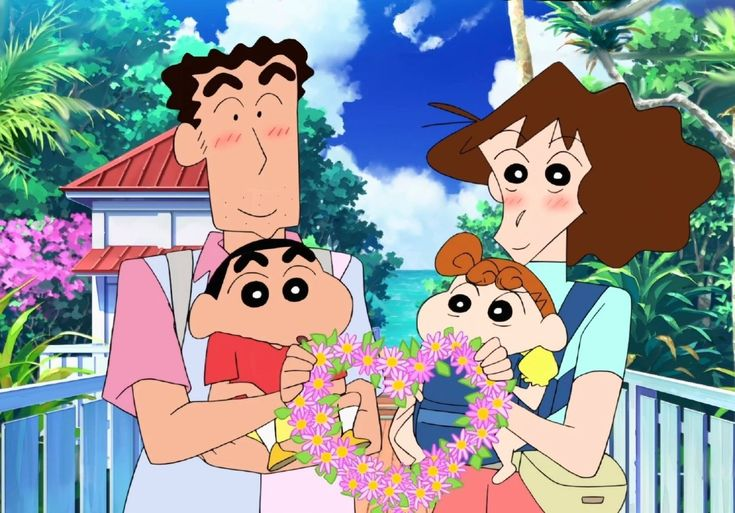
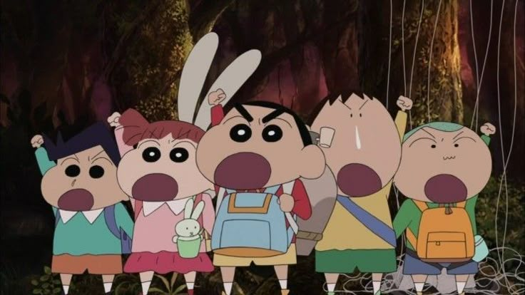

짱구 소개
짱구는 못말려 '짱구는 못말려'는 일본의 만화가 우스이 요시토가 만든 작품으로, 다섯 살 어린이인 신짱구(노하라 신노스케)를 중심으로 펼쳐지는 유쾌하고 엉뚱한 일상 이야기를 다룹니다. 짱구는 어른스러운 말투와 엉뚱한 행동으로 주변 사람들을 당황하게 만들지만, 그만의 순수함과 따뜻함으로 많은 사랑을 받고 있습니다. 애니메이션은 코믹하면서도 가족과 친구 간의 소중한 관계를 따뜻하게 그려내어 전 세계적으로 인기를 얻었습니다.
가족 소개

짱구 가족 짱구의 가족은 다섯 명으로 구성되어 있습니다.
- 신짱구는 장난꾸러기지만 가족을 누구보다 사랑하는 다섯 살 소년입니다.
- 신형만은 짱구의 아버지로, 평범한 회사원이며 가족을 부양하기 위해 열심히 일하는 책임감 있는 인물입니다.
- 봉미선은 짱구의 어머니로, 가정주부이며 엄격하면서도 따뜻하게 가족을 이끌어가는 중심 역할을 합니다.
- 신짱아는 짱구의 여동생으로, 아직 아기지만 이미 짱구 못지않은 장난기를 보여줍니다.
- 흰둥이는 가족과 함께 사는 반려견으로, 똑똑하고 짱구를 잘 돌보는 충직한 친구입니다.
친구들 소개

떡잎마을 방범대 '떡잎마을 방범대'는 짱구와 그의 친구들이 만든 어린이 모임입니다. 마을의 평화를 지킨다는 목표를 가지고 있지만, 실제로는 친구들과 함께 놀고 모험을 떠나는 일이 대부분입니다. 멤버는 신짱구, 철수(논리적이고 진지한 성격), 맹구(순박하고 느릿한 친구), 유리(새침하고 여린 성격), 훈이(똑똑하고 리더십이 있는 친구) 이렇게 다섯 명입니다. 방범대는 서로 다른 성격을 가진 친구들이 모여 다양한 에피소드를 만들어가며, 우정과 협력의 소중함을 보여줍니다.